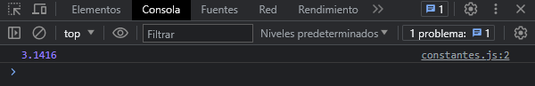

Las variables constantes presentan un ámbito de bloque tal y como lo hacen las variables definidas usando la instrucción let, con la diferencia que el valor de una constante no puede cambiarse. Las constantes no se pueden usar con el mismo nombre dentro del mismo bloque. Veamos como se declara una constante:
const PI = 3.1416
console.log(PI)
Nos muestra el valor por consola.
Las constantes por convención se definen en mayúsculas para distinción de las demás variables que no son una constante. Es necesario inicializar el valor de una constante, de lo contrario nos marcaría un error. La declaración de una constante crea una referencia de solo lectura, por lo tanto no puede ser reasignado su valor, en el caso de que la asignación sea a un objeto, este si puede ser alterado.